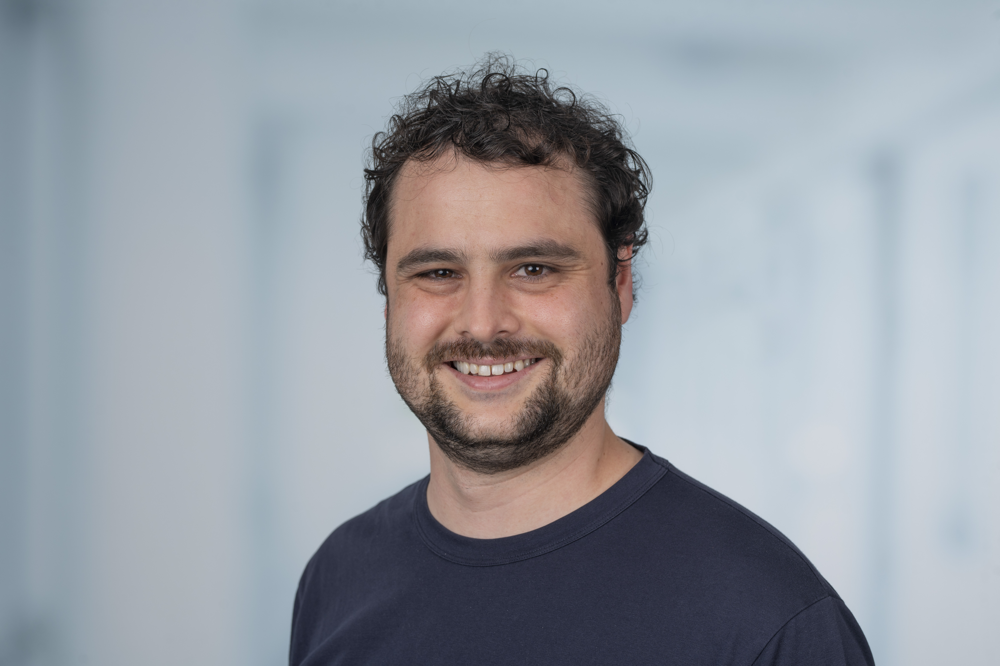

T cell & NK cell biology · Immuno-oncology · Single-cell multi-omics
Immunologist with 6+ years of postdoctoral experience across tumour immunology, viral immunity, and translational immuno-oncology. I combine wet-lab expertise in human primary tissue and genetic engineering with independent end-to-end single-cell and spatial multi-omics analysis.
My focus is understanding cytotoxic lymphocyte biology and advancing cell therapy strategies from discovery through publication.
Open to industry roles in immuno-oncology and cell therapy across the EU and Australia

NK cell plasticity and dysfunction in the tumour microenvironment. CD8 T cell state transitions, type I IFN-driven dysfunction, and unconventional T cell subsets in anti-viral and anti-tumour immunity.
Independent end-to-end pipelines across scRNA-seq, CITE-seq, scATAC-seq, and scTCR-seq on HPC. Spatial transcriptomics and high-multiplex imaging for tissue-resolved characterisation of immune niches.
CRISPR knock-out, knock-in, and overexpression in primary human NK and CD8 T cells. CAR-NK and CAR-T cell engineering with proof-of-concept data in preclinical models.
Reverse translational approaches linking clinical immune phenotypes to mechanistic discovery. Biomarker development from patient tissue through computational analysis to peer-reviewed publication.
Core expertise
Type I Interferon Drives a Cellular State Inert to TCR-Stimulation and Could Impede Effective T-Cell Differentiation in Cancer
European Journal of Immunology, 2025
NKG7 is a stable marker of cytotoxicity across immune contexts and within the tumor microenvironment
European Journal of Immunology, 2025
L-RNA aptamer-based CXCL12 inhibition combined with radiotherapy in newly-diagnosed glioblastoma: dose escalation of the phase I/II GLORIA trial
Nature Communications, 2024
Adipocyte Precursor-Derived NRG1 Promotes Resistance to FGFR Inhibition in Urothelial Carcinoma
Cancer Research, 2024
Regulatory T cells hamper the efficacy of T-cell-engaging bispecific antibody therapy
Haematologica, 2024
Stressed out: NKp46 binds ecto-calreticulin
Immunology and Cell Biology, 2023
STING activation promotes autologous type I interferon-dependent development of type 1 regulatory T cells during malaria
Journal of Clinical Investigation, 2023
Plasticity of NK cells in Cancer
Frontiers in Immunology, 2022
NKG7 Is Required for Optimal Antitumor T-cell Immunity
Cancer Immunology Research, 2022
CD155 on Tumor Cells Drives Resistance to Immunotherapy by Inducing the Degradation of the Activating Receptor CD226 in CD8+ T Cells
Immunity, 2020
The NK cell granule protein NKG7 regulates cytotoxic granule exocytosis and inflammation
Nature Immunology, 2020
T cell repertoire remodeling following post-transplant T cell therapy coincides with clinical response
Journal of Clinical Investigation, 2019
Open to discussing collaborations, translational research opportunities, and industry roles in immuno-oncology, cell therapy, and computational biology — across the EU and Australia.